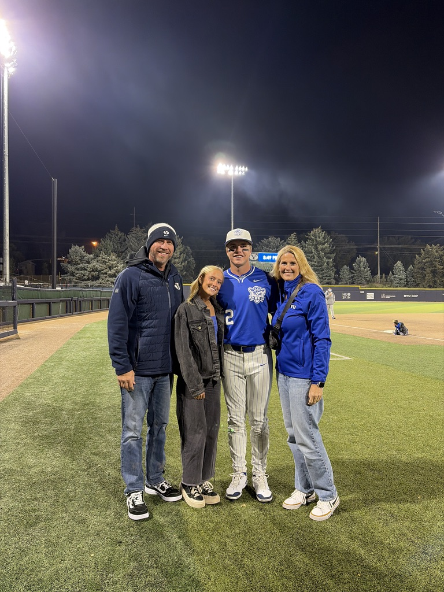

Resume
Education, experience, and skills
Baseball Journey
What baseball has taught me and some of my favorite moments
Game
Play my Word Guess game
Contact
How to get in contact with me below
I am a student-athlete at Brigham Young University, where I play baseball and spend most of my time balancing school, training, and competing. Being part of a team has shaped who I am and has helped me build strong relationships and memories that mean a lot to me. Outside of baseball, I enjoy spending time with family and friends and finding ways to stay active, have fun, and enjoy good food. While at BYU, I was lucky enough to meet and recently propose to my fiancée, Kauri Hunsaker, who is also an athlete here. She is my rock and my biggest supporter. I am someone who enjoys setting goals and working hard to achieve them, and I am always trying to grow in every aspect of my life.

Education, experience, and skills
What baseball has taught me and some of my favorite moments
Play my Word Guess game
How to get in contact with me below